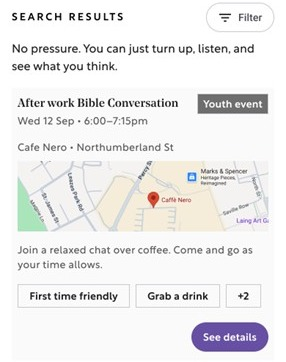

It's a space to meet with people just like you: those who are interested in finding out a little bit more about the Bible.
Free, non-preachy and non-pressured, Bible Conversations: Teesside is the place to figure out how you feel about the Bible, a place where you can explore this ancient text for yourself and hear what others think about it.
help
What happens
What happens at a Bible Conversation?
4 sessions • zero cost
This is your chance to pull up a pew, figure out how you feel about the Bible and build community – in a way that’s social, relaxed and rooted in real life.
No Bible Conversation is the same. But they all follow the same simple structure.
menu_bookWe open the Bible and read it together
check_circleNWe ask questions about it
question_answerWe explore what it says about God and people
groups
Audience
Is this group for me?
Bible Conversations: Teesside is for anyone who is curious. You do not need a church background, a ready-made belief, or the right words.
The Bible can be tricky to get into. We'll take it slowly, read a small bit together, and talk about what it might mean for real life.

person
Testimonial
What others are saying
play_arrow
handshake
Movement
Who are we?
Bible Conversations: Teesside is an ecumenical project that works with churches and community groups across Teesside.
It's a joint initiative between Bible Society and churches in Teesside.
search
Map
Find your nearest Bible Conversation
Choose a time and place that works for you - after work, during the week, or at the weekend.
These conversations are run by local churches across Teesside.
List
Your search results
0events found
0
Search for a location or select filters to see events.
help
FAQ
Still have questions?
Find out more about what to expect, how it works, and whether it's for you.
Do I need to book or can I just turn up?
You’re very welcome to turn up, but we’d recommend booking via the Eventbrite page set up by your local Bible Conversation host so they can make sure there’s space for everyone.
Is it free to join?
Yes, Bible Conversations are completely free
How do I sign up?
Registration is quick and easy. Find a Bible Conversation that suits you via our map and sign up for the event via the relevant Eventbrite page. You’ll then be sent everything you need to know ahead of the four sessions, including the location and time.
Can I bring a friend who hasn’t booked?
Absolutely, you’re very welcome to bring a friend along. However, we’re recommending everyone sign up, so hosts know how many to expect.
Why not share this link and invite them to sign up, so they know what to expect?
What happens during the sessions?
For the first session, you’ll be invited to introduce yourself and hear from others in the group. There might be a short icebreaker and a summary of how the sessions will look.
Next up: the Bible.
Each session, you’ll read or listen to an audio version of the text of the week.
Then, you’ll make your way through a short set of questions that help you dig deeper into the text. Simple and straightforward, it’s your chance to say what you like and dislike about the text, as well as exploring what you think it says about God and people.
How long do Bible Conversations last?
Around 45 minutes. They'll be wrapped up by the finish time.